Resources
Materiales académicos, proceso de revisión y Call for Papers.
Hub de Innovación Actuarial — Investigación, Docencia y Extensión

Compartir conocimiento y herramientas para fortalecer la práctica actuarial.

Actuarial Cortex se articula en tres ejes: Conocimiento · Tecnología · Formación
Ejes Académicos — La razón de ser del centro y su producción intelectual.
Identidad institucional y enlaces rápidos.
Identidad, ejes del hub y propósito.
Resources y Model Hub. Producción científica.
Formación continua, Series de Tiempo y recursos pedagógicos.
Consultoría estratégica, demos y vinculación con la industria.
Variables biométricas, financieras y de previsión. Indicadores dinámicos.
Gestión y Vinculación — Sostenibilidad, dinamismo y comunicación con el entorno.
Actuarial Cortex es un hub personal de conocimiento y tecnología actuarial impulsado por el Prof. Angel Colmenares. Con un enfoque en Conocimiento — Tecnología — Formación, integra modelos, herramientas y materiales docentes aplicados a seguros, pensiones, riesgo financiero y ciencia de datos, sirviendo de puente entre la academia y la práctica profesional.
Titulares recientes (seguros y actuarial). Ver todas en Actualidad.